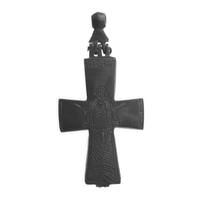
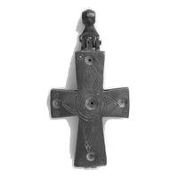

Catalog › CE-0569 · MET2026-473283
Cruce-relicvar cu Sf. Gheorghe, Met 2000.526.2
800–1300 (800–1300) · loc necunoscut · The Metropolitan Museum of Art, New York, inv. 2000.526.2
double-sided reliquary cross (enkolpion), altul; 800–1300 (800–1300); find spot unknown; kept at The Metropolitan Museum of Art, New York.




Identificare
- Categorie
- Encolpion bivalv (relicvar)
- Material
- Altul
- Dimensiuni
- Î 126 × L 61 × Gr 12 mm
Iconografie
- Avers
- Sf. Gheorghe
- Descriere avers
- Sf. Gheorghe (după titlul Met; sursa nu precizează fața).
Datare și atribuire
- Datare
- 800–1300 (800–1300)
Descoperire
- Context
- Colecție (fără context)
- Coordonate
- 40.7794° N, -73.9632° E
- Precizia locului
- Loc de păstrare (loc de descoperire incert)
Păstrare și referințe
- Colecție
- The Metropolitan Museum of Art, New York
- Nr. inventar
- 2000.526.2
- Bibliografie
- Reliquary Cross with Saint George (2000.526.2), The Metropolitan Museum of Art, Open Access (CC0), date din Met Collection API, înregistrare actualizată 2026-10-06. https://www.metmuseum.org/art/collection/search/473283 ; https://collectionapi.metmuseum.org/public/collection/v1/objects/473283 [accesat 17.10.2026] Credit: Gift of Lisa Papamarkou Jewell, in memory of her brother, Alexander Papamarkou, on the occasion of the opening of the Mary and Michael Jaharis Galleries for Byzantine Art, 2000.
- Observații
- Material: aliaj de cupru (copper alloy). Cultură: bizantin. Dimensiuni 12,6 × 6,1 × 1,2 cm; fără buton 10,2 cm. Galeria 304. Date din înregistrarea Met (titlu, cultură, dată, material, dimensiuni, credit); fără descriere iconografică în sursă dincolo de titlu. Imagini Open Access (CC0). Locul descoperirii nu e cunoscut cu precizie; punctul de pe hartă marchează locul de păstrare (The Metropolitan Museum of Art), nu locul descoperirii. Coordonate: nu sunt date în sursă.
Citare: Corpus Encolpiorum, CE-0569, Cruce-relicvar cu Sf. Gheorghe, Met 2000.526.2, --root/piese/MET2026-473283/ (accesat 2026-10-17).